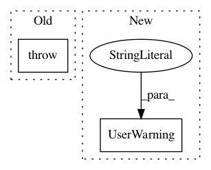

dae1204ada3d000ce96e3616af7b60b6a16f9a18,pynets/core/thresholding.py,,thresh_func,#Any#Any#Any#Any#Any#Any#Any#Any#Any#Any#Any#Any#Any#Any#Any#Any#Any#Any#Any#Any#Any#Any#Any#,859
Before Change
node_size = "parc"
if np.count_nonzero(conn_matrix) == 0:
raise ValueError("Raw connectivity matrix contains only"
" zeros.")
// Save unthresholded
utils.save_mat(
conn_matrix,
After Change
from pynets.core import utils, thresholding
if np.count_nonzero(conn_matrix) == 0:
print(UserWarning("Raw connectivity matrix contains only"
" zeros."))
[thr_type, edge_threshold, conn_matrix_thr] = \
thresholding.perform_thresholding(
In pattern: SUPERPATTERN
Frequency: 4
Non-data size: 2
Instances
Project Name: dPys/PyNets
Commit Name: dae1204ada3d000ce96e3616af7b60b6a16f9a18
Time: 2020-11-19
Author: dpisner@utexas.edu
File Name: pynets/core/thresholding.py
Class Name:
Method Name: thresh_func
Project Name: dPys/PyNets
Commit Name: dae1204ada3d000ce96e3616af7b60b6a16f9a18
Time: 2020-11-19
Author: dpisner@utexas.edu
File Name: pynets/core/thresholding.py
Class Name:
Method Name: thresh_struct
Project Name: markovmodel/PyEMMA
Commit Name: f4f78984eda245aa023870d4631b733b406e082f
Time: 2018-07-27
Author: m.scherer@fu-berlin.de
File Name: pyemma/msm/estimators/bayesian_hmsm.py
Class Name: BayesianHMSM
Method Name: _estimate
Project Name: dPys/PyNets
Commit Name: 3507c7d8d500e2c7e20572136b1549e16ccb5082
Time: 2018-06-25
Author: dpisner@utexas.edu
File Name: pynets/utils.py
Class Name:
Method Name: collect_pandas_df